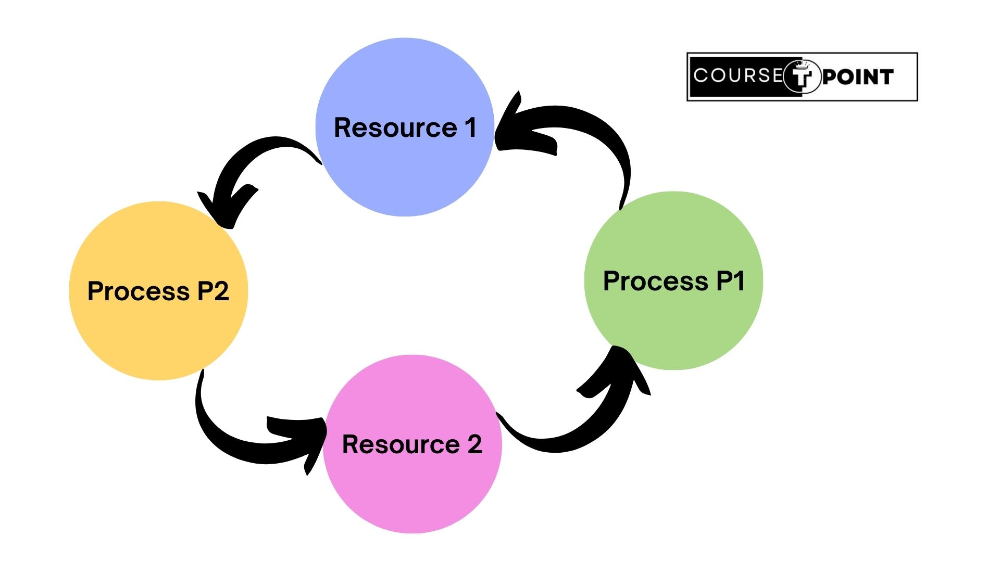
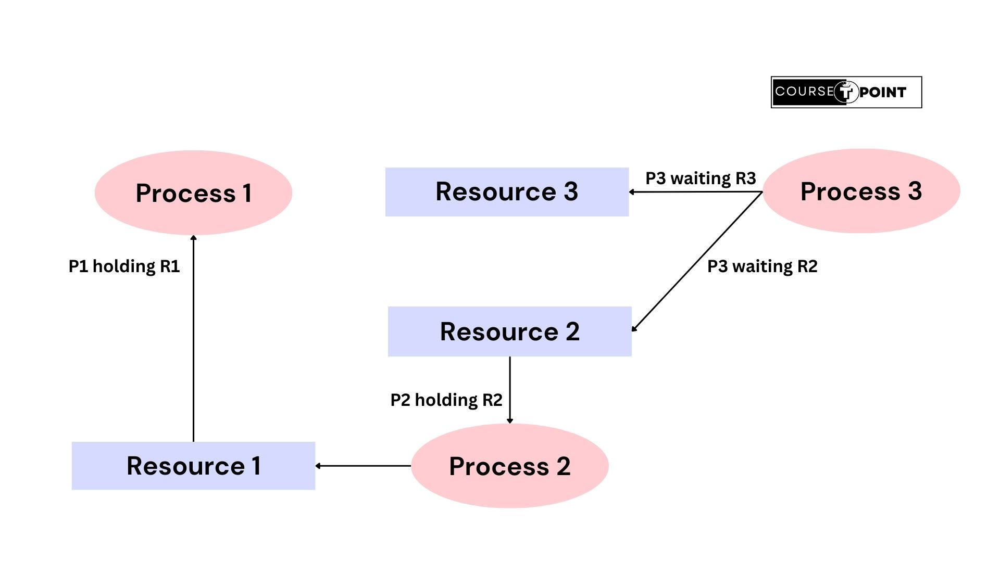

What is Deadlock in OS ?
A deadlock is a situation where two or more processes are unable to proceed because each is waiting for a resource held by another process in the same set. In other words, each process is stuck waiting for a resource that is held by another process, causing a circular dependency that prevents any of the processes from making progress. Deadlocks are a type of resource allocation issue that can occur in systems with multiple processes competing for shared resource.
Picture shows the deadlock condition -
System Model In OS
A system model refers to the abstraction used to represent the resources and processes within a system, as well as the interactions between them. Understanding the system model is crucial for analyzing and managing deadlocks effectively.
There are several common components of a system model in deadlock analysis:
- Resources: Resources are entities that are used or requested by processes during their execution. These can include various types of system resources such as memory, CPU time, I/O devices, and more.
- Processes: Processes are the executing entities within the system. Each process may request and hold resources during its execution.
- Resource Types: Resources can be classified into different types based on their characteristics. For example, resources may be categorized as reusable or consumable, or they may have different levels of priority.
- Resource Allocation: This component of the system model describes how resources are allocated to processes. It includes mechanisms for requesting, acquiring, using, and releasing resources.
- Deadlock Conditions: The system model should include an understanding of the necessary conditions for deadlock, such as mutual exclusion, hold and wait, no preemption, and circular wait.
- Concurrency: The system model should account for the concurrent execution of multiple processes and their interactions with resources. Concurrent execution introduces the potential for race conditions and contention for resources, which can lead to deadlock.
Characteristics of Deadlock
Deadlock characterization refers to the identification and understanding of conditions that can lead to deadlock in a system. To understand and prevent deadlocks, it's essential to characterize the conditions that can potentially lead to deadlock.
Four conditions must be met for a deadlock to occur.
- Mutual Exclusion
- Hold and Wait
- No Preemption
- Circular Wait
- Mutual Exclusion: The First condition is Mutual Exclusion, in which at least one resource must be held in a non-sharable mode, meaning only one process at a time can use the resource. This condition ensures that the resource cannot be simultaneously accessed or modified by multiple processes.
- Hold and Wait: The "Hold and Wait" condition in deadlock refers to a scenario where processes hold resources they already possess while simultaneously waiting for additional resources that are currently held by other processes. The "Hold and Wait" condition is one of the necessary condition of the deadlock occurance.
- No Preemption: The "No Preemption" condition in deadlock refers to a scenario where resources cannot be forcibly taken away from a process that is currently holding them. They must be released voluntarily by the process holding them. This condition ensures that processes cannot be interrupted or preempted while holding resources, which can contribute to deadlock scenarios.
- Circular Wait: The "Circular Wait" condition in deadlock refers to a scenario where there exists a circular chain of two or more processes, each of which is waiting for a resource held by the next process in the chain. This condition is one of the four necessary conditions for deadlock to occur.This condition forms a circular dependency among the processes, where each process is waiting for a resource held by another process in the cycle.
Strategies for handling deadlock
Deadlocks are situations in concurrent systems where two or more processes are unable to proceed because each is waiting for the other to release a resource. Handling deadlocks requires careful design and implementation of strategies to detect, prevent, and recover from deadlock situations.
Here are some common strategies for handling deadlocks:
- Deadlock Ignorance
- Deadlock Prevention
- Deadlock Avoidance
- Deadlock Detection & Recovery
Deadlock Ignorance: Deadlock ignorance, also known as Ostrich Method through ignoring the problem, is a strategy where the system designers or developers choose to not implement specific mechanisms to detect, prevent, or resolve deadlocks. Instead, they depend on the assumption that deadlocks are rare occurrences or that the likelihood of deadlocks happening is low enough that dealing with them preemptively is not worth the effort.
This approach essentially involves disregarding the deadlock problem and accepting the risk that deadlocks may occur. It can be justified in situations where the cost of implementing deadlock prevention or detection mechanisms overcome the potential impact of occasional deadlocks. Additionally, it might be considered in systems where deadlocks are extremely unlikely due to the nature of the applications or the usage patterns.
Deadlock Prevention: Deadlock prevention is a strategy employed in operating systems to ensure that deadlock does not occur. Having seen that deadlock avoidance is essentially impossible, because it requires Information about future requests, which is not known , how to real systems avoid deadlock? The answer is to go back to the Four conditions to see if they can provide any clue. If we can ensure that al least one of these conditions is never satisfied, then deadlocks will be structurally impossible.
Here are some common techniques used for deadlock prevention:
- Mutual Exclusion: Ensure that resources cannot be shared among processes. This prevents the possibility of deadlock since a resource can only be held by one process at a time.
- Hold and Wait: Require processes to request all the resources they need before starting execution, rather than requesting them incrementally. This way, a process will not hold any resources while waiting for others, reducing the chance of deadlock.
- No Preemption: Do not allow resources to be forcibly taken away from a process. This means that if a process is holding certain resources and requests additional resources that cannot be immediately allocated, it will release all currently held resources and start over.
- Circular Wait Elimination: Impose a total ordering of all resource types and require that each process request resources in an increasing order of enumeration. By ensuring that resources are always requested in the same order, the possibility of circular waits (where each process is waiting for a resource held by the next process in a circular chain) is eliminated.
Deadlock Avoidance: eadlock avoidance is another strategy used in operating systems to deal with the problem of deadlock. Unlike deadlock prevention, which focuses on structuring the system in a way that deadlocks cannot occur, deadlock avoidance allows for the possibility of deadlock but employs techniques to ensure that the system can always recover from it if it does occur.
In deadlock avoidance, the system uses various algorithms and heuristics to dynamically analyze the state of the system and the resource allocation requests from processes to decide whether granting a request would potentially lead to deadlock. The system then makes decisions based on this analysis to ensure that deadlocks are avoided or resolved if they are detected.
One common technique used in deadlock avoidance is the Banker's algorithm.
Banker's Algorithm: A Scheduling algorithm that can avoid deadlocks is due to Dijkstra and is known as the Banker's Algorithm and is an extension of Deadlock Detection algorithm. This algorithm works by simulating the allocation of resources to processes and determining if a particular resource allocation will lead to a safe state (a state where all processes can complete their execution without causing deadlock). If a safe state can be reached, the resource allocation is granted; otherwise, the request is denied or delayed until a safe state is possible.
Here's an example of Banker's Algorithm-
Deadlock Detection & Recovery: Deadlock detection and recovery is another approach used in operating systems to address the deadlock problem. Unlike deadlock prevention and avoidance, which aim to prevent deadlocks from occurring or avoid them altogether, deadlock detection and recovery acknowledges the possibility of deadlocks and focuses on identifying them when they occur and then taking action to recover from them.
Here's how deadlock detection and recovery typically work:
Deadlock Detection: Deadlock detection in operating systems is a mechanism used to identify whether a deadlock has occurred within the system. Deadlock detection is an essential component of deadlock management in operating systems. By detecting deadlocks, the system can take appropriate actions to mitigate their impact and ensure the continued functionality and stability of the system.
Detection Using 'Resource Allocation Graph': A resource allocation graph is a graphical representation used in operating systems to analyze resource allocation and detect potential deadlocks. It is primarily employed in systems where resources are shared among multiple processes, and the occurrence of deadlocks needs to be managed. In this graph, processes are represented as nodes, and resource types are represented as additional nodes. Directed edges represent resource requests and allocations. A cycle in this graph indicates the potential occurrence of a deadlock.
Example of Resource Allocation Graph(RAG)-
Deadlock Recovery: Deadlock recovery is a process in operating systems where the system detects the occurrence of a deadlock and takes actions to resolve it so that the affected processes can resume execution. Deadlock recovery mechanisms are essential for maintaining system stability and ensuring that the system can continue to function despite encountering deadlock situations.
Various recovery techniques from a deadlock situation-
Recovery through Preemption: The ability to take a resource away from a process use it, and then give it back without the process noticing it is highly dependent on the nature of the resource. Recovering this way is frequently difficult or impossible. Choosing the process to suspend depends largely on which ones have resources that can easily be taken back.
Recovery from Rollback: When a deadlock is detected, it is easy to see which resources are needed. To do the recovery, a process that owns a needed resource is rolled back to a point in time before it acquired some other resource by starting one of its earlier check-points. All the work done since the checkpoint is lost. In effect, the process is reset to an earlier moment when it did not have the resource, which is now assigned to one of the deadlocked processes. If the restarted process tries to acquire the resource again, it will have to wait until it becomes available.
Recovery through killing process: In this approach, process to be killed is carefully chosen because it is holding resources that some process in the cycle needs. For example, one process might hold a printer and want a plotter, with another process holding a plotter and wanting a printer. These two are deadlocked. A third process may hold another identical printer and another identical plotter and be happily running. Killing the third process will release these resources and break the deadlock involving the first two.